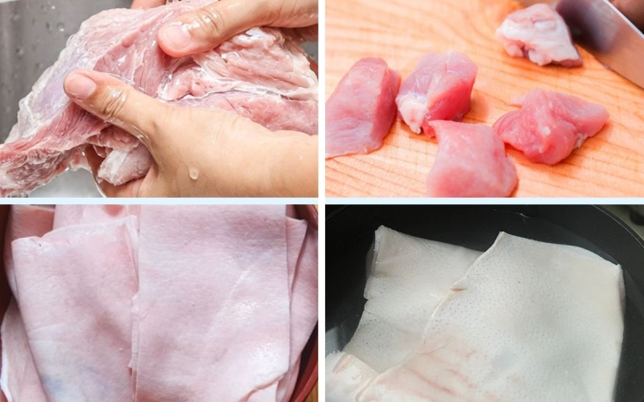
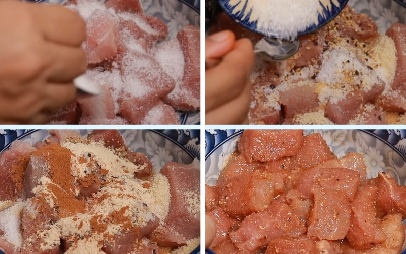
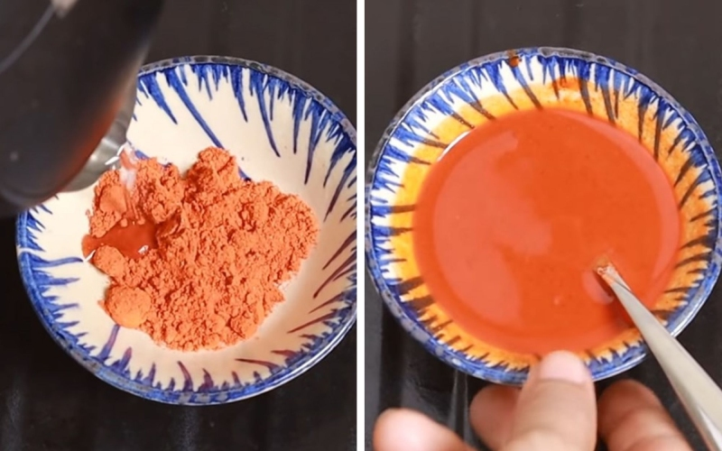
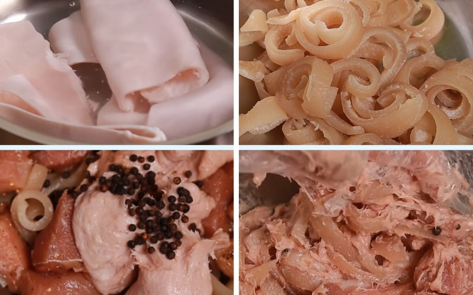
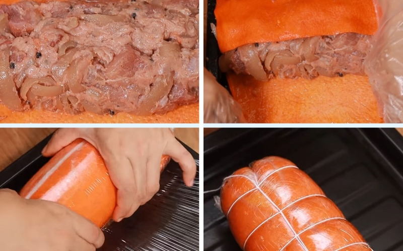
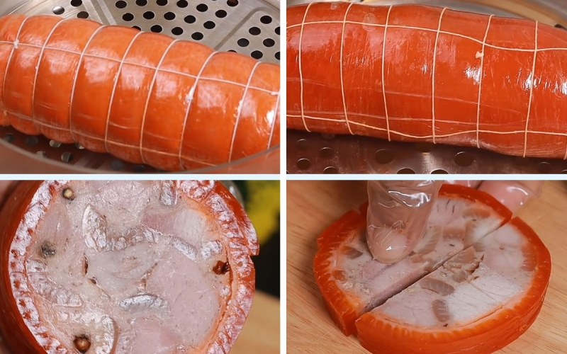
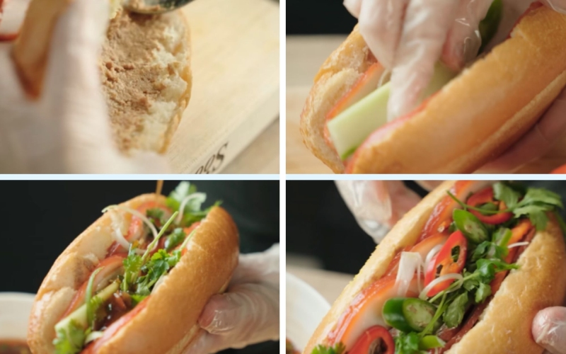

Nguyên liệu
- 500g thịt heo đùi
- 500g da heo
- 300g giò sống
- 4 ổ bánh mì
- 1 quả dưa leo
- 300g hành lá
- 300g ngò rí
- 1 quả chanh
- 1 muỗng cà phê bột tỏi
- 1/2 muỗng cà phê bột quế
- 1/2 muỗng canh bột gấc
- 500g chả lụa
- Gia vị: Muối, đường, bột ngọt, tiêu, hạt nêm, ớt
Các bước
-
Sơ chế nguyên liệu
Thịt heo mua về bạn mang đi rửa sạch với muối rồi mang đi trụng sơ với nước sôi khoảng 2 phút. Tiếp đến, bạn xả sạch miếng thịt với nước lạnh rồi để ráo, cắt miếng vừa ăn.
Về phần da heo, bạn nhúng da heo qua nước sôi khoảng 3 phút rồi dùng nhíp nhỏ cho sạch phần lông còn xót trên da. Dùng chanh và muối chà cho thật sạch rồi mang đi rửa với nước sạch, để ráo.
 -
Ướp thịt
Sau khi cắt thịt đùi thành miếng vừa ăn, bạn mang đi ướp với 1 muỗng canh đường, 1 muỗng canh hạt nêm, 1 muỗng canh nước mắm, 1 muỗng cà phê muối, 1 muỗng cà phê tiêu, 1/2 muỗng cà phê bột ngọt, 1 muỗng cà phê bột tỏi, 1/2 muỗng cà phê bột quế rồi trộn đều và để trong 20 phút.
Làm nước nhuộm da heo
Để da heo có màu đẹp mắt, bạn trộn đều 1/2 muỗng canh bột gấc và 1 muỗng canh nước lọc, sau đó thoa đều nước nhuộm lên 300g da heo.
Luộc da heo và trộn nhân
Lấy 200g da heo mang đi luộc trong 20 phút cho chín mền rồi vớt ra, để ráo nước rồi cắt sợi nhỏ.
Cho da heo cắt sợi, thịt nạc cùng 300g giò sống, 1 muỗng canh tiêu sọ rang rồi dùng tay trộn đều.
Bó thịt
Chuẩn bị một cái mâm hay một cái khay rồi trải lên trên 1 miếng màng bọc thực phẩm. Tiếp đến bạn cho miếng da heo đã nhuộm lên rồi cho nhân đã trộn vào giữa.
Bắt đầu cuộn thịt lại thật chặt tay bằng 3 - 4 lớp bọc thực phẩm ở cả chiều ngang rồi chiều dọc rồi dùng dây cước bó lại để cố định.
Hấp thịt
Cho cuộn thịt vào xửng hấp, bạn hấp thịt trong khoảng 1 giờ 20 phút trên lửa vừa. Sau khi thịt chín đều thì bạn lấy ra, để nguội rồi cho vào ngăn mát tủ lạnh trong 5 tiếng rồi lấy ra, cắt lát mỏng.
Hoàn thành
Bạn xẻ mở ổ bánh mì, dàn đều 1 muỗng cà phê bơ bánh mì, một muỗng pate heo, vài lát thịt nguội, vài miếng chả lụa, dưa leo xắt mỏng, hành lá và ngò rí cắt sợi, đồ chua, nước sốt rồi vài lát ớt tùy thích là có thể thưởng thức được rồi.
